Die mächtigen Gas-Planeten
Die Gas-Planeten zeigen Eigenheiten, die man nur staunend zur Kenntnis nehmen kann. Es gibt bislang z.B. keine Erklärung für die stürmische Oberfläche des Jupiters oder die filigranen Ringe des Saturn oder warum einige Monde ´rückwärts´ fliegen. In diesem Kapitel werden Bewegungsprozesse dieser beiden Gas-Planeten dargestellt, wie sie sich nur im lückenlosen Äthers ergeben können. In Bild 08.20.01 sind einige Daten von Jupiter und Saturn aufgelistet, zum Vergleich auch von der Sonne und der Erde.
In der oberen Zeile sind Massen in Relation zur Erd-Masse aufgeführt (M * ERDE). Der Saturn ist fast hundert mal ´schwerer´ als die Erde. Der Jupiter ist noch drei mal massiger. Er ´wiegt´ damit aber noch kein Tausendstel der Sonne. Bis auf ein paar Promille ist damit alle Masse des Systems in der Sonne vereinigt - wenn die Rechnung nach Newton und Kepler stimmig wäre.
Man kennt nur das ´spezifische Gewicht´ der Erd-Kruste. Die Schätzung der gesamten Erd-Masse ist spekulativ und damit sind alle daraus abgeleiteten Daten sehr vage. Man kennt die Umlaufzeit und den Bahnradius der Erde um die Sonne. Man unterstellt die ´Konstanz´ der irdischen Gravitationskraft als universell wirksam (siehe dazu aber Kapitel 08.16. ´Wesen der Gravitation und Aufbau der Erde´). Aus der vermeintlichen Fliehkraft der Erde wird rein theoretisch die ´notwendige´ Masse der anderen Himmelskörper berechnet. Darum ´müssen´ die Sonne 330000, der Jupiter 318 und der Saturn 95 mal die Erd-Masse aufweisen. Wenn die Gravitation eine andere Ursache hat und/oder anders wirkt, sind diese Daten illusorisch.
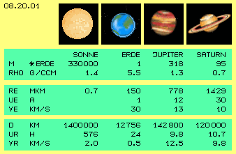
In der nächsten Zeile ist die Dichte der Himmelskörper dargestellt in Gramm je Kubik-Zentimeter (RHO G/CCM), wobei für die Erde diese 5.5 g/ccm unterstellt werden. Aus der Relation von Masse und Volumen der Himmelskörper wird jeweils deren durchschnittliche Dichte ermittelt: für die Sonne 1.4 g/ccm, für Jupiter etwa 1.3 g/ccm und für Saturn nur 0.7 g/ccm. Seltsamerweise ergibt sich für den kleineren Gas-Planeten Uranus wieder erhöhte Dichte von rund 1.3 g/ccm und für den nochmals kleineren Neptun gar von 1.7 g/ccm (beide hier nicht dargestellt).
Die differenzierte Dichte wird mit der Zusammensetzung der Gase und unterschiedlichen Temperaturen begründet - aber es bleibt der Eindruck, dass hier etwas ´zurecht-gerechnet´ wurde. Zum Vergleich: auf der Erde wiegen Gase z.B. der Luft etwa ein tausendstel Gramm je Kubikzentimeter. In den Gas-Planeten wären die Gase also im Mittel rund tausendfach stärker komprimiert - nach herrschender Lehre, nach der sich alle Gas-Atome gegenseitig anziehen sollen (siehe dazu aber Kapitel ´08.18. Äther-Physik der Sonne´).
Rasende Drehung
In den mittleren Zeilen dieser Graphik sind die Radien in der Ekliptik aufgelistet (RE MKM). Die Entfernung zwischen Erde und Sonne ist etwa hundertfünfzig Millionen Kilometer, Jupiter ist fünf und Saturn etwa zehn mal weiter entfernt (diese 150, 778 und 1429 Mkm). Je weiter außen, desto langsamer ist die Umdrehung in der Ebene der Ekliptik (Zeile UE A). Die Erde braucht ein Jahr, Jupiter schon 12 und Saturn ganze 30 Jahre für eine Umrundung.
Das entspricht der Gesetzmäßigkeit eines Potentialwirbels, der von außen nach innen schneller dreht (Zeile VE KM/S). Saturn bewegt sich mit nur 10 km/s vorwärts, Jupiter mit 13 km/s, die Erde wesentlich schneller mit rund 30 km/s. Wir rasen also mit rund 100000 km/h um die Sonne herum - und merken nichts davon (weil eingebettet in diesem Äther-Wirbel).
In den unteren drei Zeilen der Graphik sind die Durchmesser (D KM) dieser Himmelskörper aufgelistet, wieviel Stunden eine Umdrehung um ihre eigene Achse dauert (UR H) und welche Drehgeschwindigkeit dabei am Äquator gegeben ist (VR KM/S).
Die Sonne hat einen Durchmesser von 1.4 Millionen Kilometer, dreht sich ein mal binnen 24 bis 36 Tagen, am Äquator bewegt sich ihre Oberfläche mit etwa 2 km/s vorwärts. Dagegen erscheint die Erde mit ihrem Durchmesser von kaum 13000 km wie ein Staubkorn. Die Erde dreht sich binnen 24 Stunden einmal um sich selbst. Dieses ´Karussell´ dreht sich am Äquator mit rund 1660 km/h bzw. nur etwa 0.5 km/s im Kreis herum.
Jupiter mit 142800 km und Saturn mit 120000 km Durchmesser sind dagegen riesige Gas-Wolken. Für eine Umdrehung brauchen sie gerade mal 9.8 und 10.7 Stunden. Das entspricht am Äquator etwa 12.5 km/s und 9.8 km/s - also ziemlich extremen Rotations-Geschwindigkeiten. Andererseits gibt es viele ´astronomische Extreme´: z.B. nimmt sich die Venus ganze 243 (Erd-) Tage für eine einzige Umdrehung. Umgekehrt, bei einem Neutronen-Stern soll z.B. die dreifache Sonnen-Masse auf einen Durchmesser von 20 km reduziert sein und Pulsare sollen binnen Sekunden rotieren.
Zweifelsfrei toben auf den Gas-Planeten gewaltige Stürme mit 300 oder auch 500 km/h. Zweifelsfrei kann sich Äther noch viel schneller bewegen als Materie. Obwohl sich also die ganze Gaswolke mit bis zu 45000 km/h am Äquator dreht, könnte sie durchaus als ´Bremsklotz´ wirken. In früheren Kapiteln wurde die Interaktion von Äther und Materie mehrfach ausgeführt, nachfolgend wird nur an ein paar relevante Bewegungsmuster erinnert.
Generelles Schwingen
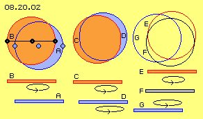
In Bild 08.20.02 sind zunächst drei Varianten skizziert, deren Bewegungen in der nachfolgenden Animation verdeutlicht sind. Links in diesem Bild sind drei blaue Ätherpunkte einer ruhenden Ebene A eingezeichnet. Darüber gibt es eine rote Ebene B, auf welcher sich die drei schwarzen Ätherpunkte befinden. Jeder schwarze Punkt schwingt um seinen blauen Punkt, alle schwingen synchron und der Abstand zwischen den Punkten bleibt immer konstant. Auch alle Ätherpunkte auf der schwarzen Verbindungslinie werden immer nur parallel verschoben. Mit dieser Darstellung und Animation (jeweils links) wurde im vorigen Kapitel nochmals klar gestellt, dass es im Äther keine Rotation geben kann (der linke schwarze Punkt rotiert nicht um den mittleren schwarzen Punkt), sondern nur dieses parallele Schwingen (der linke schwarze Punkt bleibt immer links vom mittleren schwarzen Punkt).
Weil aller Äther lückenlos zusammenhängend ist, kann kein Ätherpunkt sich unabhängig bewegen. Hier sei noch einmal festgestellt, dass es weite Schichten von Äther geben kann, die relativ ruhend sind und es andererseits weiträumige Schichten gleichartigen Schwingens gibt, z.B. auch mit gleichgerichtetem Schlagen wie in den Whirlpools.
Differenziertes Schwingen
Mittig in obigem Bild (und der Animation) ist eine rote Äther-Schicht C über einer blauen Schicht D dargestellt. Wie zuvor schwingt die obere rote Ebene, nun aber auch die untere blaue Ebene. Beide Flächen sind gleich groß gezeichnet und beide schwingen linksdrehend. Allerdings schwingt die blaue Fläche etwas schneller und an längerem Radius.
|
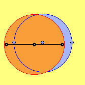 |
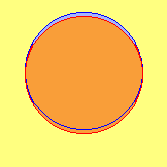 |
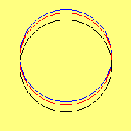 |
Wie oftmals hervor gehoben wurde, befindet sich jeder Ätherpunkt immer nur innerhalb eines kleinen Bereiches, wo seine Bewegung auf engem Raum statt findet. Dennoch entsteht der Eindruck weiträumiger Bewegung. Links im Bild und in der Animation ´rotiert´ ein Teil der roten Fläche um die ruhende blaue Fläche. Mittig im Bild und in der Animation rotiert scheinbar eine blaue Sichel um die rote Fläche. Links ist eine symmetrische Umdrehung zu erkennen, während mittig ein Schlingern unterschiedlicher Intensität auftritt.
Ebenfalls in vorigen Kapiteln wurde schon ausgeführt, dass sich benachbarte Schichten unterschiedlich bewegen können, indem sie z.B. relativ zueinander schwingen. Aller Äther der Schichten verlagert sich kreisend und parallel zueinander. Die Differenzen des Schwingens werden dazwischen durch kegelförmige Bewegung der Verbindungslinien problemlos ausgeglichen (in vertikaler Richtung). Nur am Rand dieser Bewegungskomplexe ergeben sich Probleme durch die seitliche Verschiebung: irgendwo ist in einer Ebene momentan ´zu wenig oder zu viel´ Äther vorhanden (in der horizontalen Ebene).
Das betrifft die überstehenden Bereiche, hier also die blauen Sicheln. Links kann ein Ausgleich zwischen den Ebenen einigermaßen symmetrisch erfolgen. In der mittigen Konstellation allerdings müsste ein Ausgleich mit differenzierten Geschwindigkeiten, in variablem Umfang und an unterschiedlichen Orten statt finden.
Um diese Problematik am Rand des Bewegungskomplexes zu verdeutlichen, sind rechts im Bild (und in der Animation) die Flächen nurmehr als Kreise markiert. Die rote Ebene E schwingt über der blauen Ebene G. Um die Differenz ersichtlich zu machen, ist dazwischen eine ruhende graue Ebene F gezeichnet (bzw. ein schwarzer Kreis). Man kann nun erkennen, wie die Überschneidungen mit wechselnden Winkeln statt finden. Das ganze Gebilde schwingt phasenweise weit auseinander und ´beruhigt´ sich andererseits wieder (etwa so wie auch Kreisel taumelnde Bewegungen ausführen).
Vor- und Rückdrehendes Schwingen
In Bild 08.20.06 sind links noch einmal verschiedene Schichten gezeichnet, auf jeder Ebene ist ein Ätherpunkt schwarz hervor gehoben. Die grauen Ebenen A sind relativ ruhender Äther, jeweils dazwischen kann sich der Äther weiträumig bewegen. Dieses Schwingen auf zunehmend weiteren Bahnen wird hier durch die rote Verbindungslinie gekennzeichnet. Alle vertikal benachbarten Ätherpunkte bewegen sich in Form eines ´Doppel-Kegels´ bzw. hier bei dieser mehr-schichtigen Anordnung als ´Doppel-Kurbel´ (siehe vorige Kapitel).
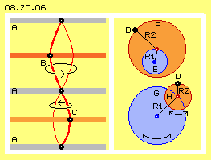
Die grauen Ebenen A stellen praktisch neutrale Zonen dar, zwischen denen es Gürtel von individuellem Schwingen geben kann. Die dunkelrote Ebene B könnte heftiger schwingen als die hellrote Ebene C. Beide könnten synchron schwingen oder mit unterschiedlicher Frequenz bzw. Geschwindigkeit. Zwischen den neutralen Zonen kann es schmale oder breite Gürtel geben. Es ist sogar möglich, dass oberhalb / unterhalb einer neutralen Zone ein links-drehendes oder rechts-drehendes Schwingen gegeben ist.
Alle Bewegungen des Äthers setzen sich aus vielfältigen Überlagerungen zusammen. Rechts in diesem Bild sind simple Möglichkeiten skizziert, wobei nur zwei Kreisbewegungen überlagert sind. Die schwarzen Ätherpunkte D bewegen sich so, als würden sie an einem zwei-armigen Gelenk geführt. Oben repräsentiert die blaue Kreisfläche E ein klein-räumiges Schwingen (z.B. vorige neutrale Ebene) um den dunkelblauen Drehpunkt mit Radius R1. Das Ende dieses Hebelarmes kann nun wiederum einen roten Drehpunkt bilden, um den ein zweiter Hebelarm R2 sich drehen kann, prinzipiell also die rote Kreisfläche F bestreicht.
Es kann sich z.B. aus dem engen Schwingen einer neutralen Zone ein zunehmend weiteres Schwingen heraus bilden, indem der Radius R2 länger wird. Es könnte auch ein relativ langer Radius R1 durch einen kürzeren Radius R2 überlagert sein, wie hier durch die große blaue Kreisfläche G und kleine rote Fläche H rechts unten skizziert ist. Beide überlagerte Bewegungen können gleichsinnig oder gegensinnig drehen (siehe Doppel-Pfeile). Beide Bewegungen können gleich oder unterschiedlich schnell drehend sein.
Schlingern
Je nach dem Verhältnis von Längen, Geschwindigkeiten und Dreh-Sinn der überlagernden Bewegungen ergeben sich unterschiedliche Bahnen für die Ätherpunkte eines Bereiches. Die Bewegung kann sukzessiv übergehen von einem Kreis zur Ellipse mit variabler Exzentrizität. Es kann einen fließenden Übergang der Formen geben. Die Bahnen müssen nicht symmetrisch sein und es werden sich auch ´taumelnde´ Strukturen ergeben.
Häufig werden sich Bewegungsmuster auftreten, wie sie in Bild 08.20.07 oben dargestellt sind. Bei einem ´Rosetten-Muster´ A können die Schleifen mehr oder weniger spitz sein. Die ´ovale´ Bahn ist nicht symmetrisch, vielmehr wandern die Scheitelpunkte um ein Zentrum. Die Drehungen können dabei gleich- oder gegensinnig sein (siehe Pfeile).
Oben rechts ist eine ´Doppel-Schlinge´ B skizziert. Ein Ätherpunkt bewegt sich dabei aus einer engen Schleife (hellrot) hinaus auf eine weite Schleife (dunkelrot) und zurück in die enge Bahn. Der Ätherpunkt bewegt sich dabei unterschiedlich schnell im Raum (angezeigt durch die Pfeile). Vom inneren Scheitelpunkt wird er beschleunigt auf einer auswärts gerichteten Bahn. Er erreicht maximale Geschwindigkeit beim äußeren Scheitelpunkt. Danach wird er auf der Einwärts-Bahn wieder verzögert. Wie bei einer ´Schwabbel-Scheibe´ oder einem ´Schwing-Schleifer´ bewegen sich ganze Flächen auf solchen Bahnen, alle benachbarten Punkte parallel zueinander.
Schlagen
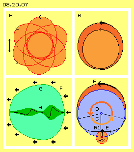
Zwischen neutralen Ebenen können also Schichten mit höchst unterschiedlichem Schwingungsmuster bestehen, abhängig von den überlagerten Bewegungen. Allen Arten von Überlagerungen ist aber eines gemeinsam: die schlagende Bewegungskomponente. Deren prinzipiellen Merkmale sind in Bild 08.20.07 unten rechts dargestellt. Als einfaches Beispiel überlagern sich hier nur zwei Kreisbewegungen in einer Ebene (real können sich viele Bewegungen drei-dimensional überlagern).
Die blaue Kreisfläche repräsentiert die primäre Bewegung mit Radius R1. Unten ist ein kleiner roter Kreis gezeichnet, welcher die sekundäre Bewegung an Radius R2 repräsentiert (R2 ist etwa ein Fünftel von R1). Beide Bewegungen weisen gleichen Drehsinn auf und beide drehen einmal je Zeiteinheit.
Die Bahn des schwarzen Ätherpunktes ist unten flach eingedrückt (bei E) und oben ausgeweitet (bei F). Die zwei gestrichelten Linien kennzeichnen die Sektoren, die jeweils in einer Zeit-Hälfte zurück gelegt werden. Während einer Zeit-Hälfte legt der Ätherpunkt relativ langsam eine kurze Distanz zurück, wie durch den kurzen Pfeil C (hellrot) markiert ist. Während der zweiten Zeit-Hälfte bewegt er sich schneller und weiter im Raum vorwärts, wie durch den längeren Pfeil D (dunkelrot) markiert ist.
Der Ätherpunkt bewegt sich vom unteren zum oberen Scheitelpunkt immer schneller im Raum und anschließend wieder langsamer. Jede Überlagerung von Ätherbewegungen führt zwangsweise zu Phasen von Beschleunigung und Verzögerung. Es ergibt sich immer eine ´schlagende Bewegungskomponente´ im ausgeweiteten Bahnabschnitt (dunkelrot markiert), wie hier durch den starken Pfeil bei F angezeigt ist. Nur in den vorigen neutralen Zonen kann die Ätherbewegung einigermaßen symmetrisch sein. Das Schwingen in den Ebenen und Schichten dazwischen muss aber immer ein Schlagen aufweisen.
Schieben
Nur dieses Schlagen macht Bewegung im Äther sichtbar, wenngleich nur mittelbar: weil dadurch ein Schub auf die groben Bewegungsmuster der Atome ausgeübt wird. Diese Schnittstelle zwischen der (unsichtbaren) Ätherbewegung und der Bewegung sichtbarer Materie wurde in vorigen Kapiteln mehrfach dargestellt. Hier ist unten links darum nur eine Skizze wiederholt: das Atom G besitzt eine Aura (hellgrün) und ein konzentrisch angeordnetes Schwingen. Je nach chemischem Element sind unterschiedlich viel ´Wirbelzöpfe´ integriert. Hier wird dieses interne Bewegungsmuster nur durch eine ´Doppelkurbel´ H (dunkelgrün) repräsentiert.
Wenn dieses Atom sich im Bereich mit einer schlagenden Bewegungskomponente befindet, übt diese periodisch einen Druck auf den Wirbelkomplex aus (siehe dicke Pfeile F). In der Phase der schnellen Vorwärtsbewegung wird die Aura des Atoms deformiert. Die interne spiralige Bewegung wird in der Längsrichtung verkürzt und zur Seite entsprechend ausgeweitet. In der anschließenden Phase der langsamen Rückwärts-Bewegung im umgebenden Äther wird die Asymmetrie zurück gebildet. Der allgemeine Ätherdruck rückt das Atom wieder in seine Kugelform zurecht.
Bei jedem dieser Schübe ist anschließend das Atom etwas nach vorn gerückt. Allerdings wurde dabei keine ´Materie´ im Raum vorwärts geschoben. Und auch kein Ätherpunkt hat dabei seinen originären Ort verlassen. Nur die Struktur des Bewegungsmusters dieses Atoms wird damit im Raum jeweils weiter gereicht an den Äther etwas weiter vorn auf dieser Bahn, den das vermeintlich ´feste Teilchen´ nimmt.
Ich habe diese Interaktion zwischen Äther und ´Materie´ mehrfach dargestellt. Mit diesem Verständnis der lückenlosen Grundsubstanz und seiner diversen internen Bewegungsmuster unterscheidet sich meine Äther-Physik grundlegend von allen anderen Theorien zum Äther und natürlich diametral gegenüber konventioneller Physik. Nur auf dieser Grundlage sind die Bewegungen in den Whirlpools der Sonne und der Erde bzw. hier nun der ´Phänomene´ der Gas-Planeten zu erklären.
Whirlpools
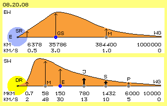
In den Wirbelsystemen um die Himmelskörper ist das Schlagen jeweils im Kreis herum ausgerichtet. In Bild 08.20.08 sind (schematisch, d.h. nicht maßstabgerecht) einige Daten zum Whirlpool der Erde (EW) dargestellt. Seine Grenze (WG) ist vermutlich erst bei einem Radius von einer Million Kilometer gegeben. Von da an einwärts wirkt die schlagende Bewegungskomponente und schiebt den Mond (M) bei Radius 384400 km mit etwa 1 km/s um die Erde herum. In einer Höhe von 35786 km erfahren Satelliten (GS) einen Schub von etwa 3 km/s und driften damit ´stationär´ zur Erdoberfläche im Raum.
Generell wird also der Schub von außen nach innen stärker, wie es der Charakteristik eines Potential-Wirbels entspricht. Allerdings wird der Wirbel auf 0.5 km/s eingebremst am Äquator der massiven Erde (E). Die Erde und ihr Äther-Umfeld bis mindestens zu den geostationären Satelliten stellt damit eine starre Rotation (SR) dar.
Der Sonnen-Whirlpool (SW, im Bild unten) ist ´millionenfach´ größer. Der äußerste Planet Pluto (P) ist etwa sechstausend Millionen Kilometer (6000 Mkm) von der Sonne entfernt. Und die Geschwindigkeiten sind wesentlich höher: Pluto fliegt dort außen noch immer mit etwa 5 km/s auf seiner exzentrischen Bahn um die Sonne.
Hier interessieren die beiden inneren Gasplaneten Saturn (S, der am Radius von 1432 Mkm etwa 10 km/s schnell ist) und Jupiter (J, der bei 780 Mkm nochmals schneller ist mit rund 13 km/s). Die Beschleunigung nach innen nimmt rapid zu, z.B. auf die rund 30 km/s der Erde (E) und dann die 48 km/s des innersten Planeten Merkur (M).
Die rote Kurve zeigt diese Tendenz der Trift-Geschwindigkeiten. Im Gegensatz zum Erd-Wirbel wird der Ekliptik-Wirbel nicht durch einen zentralen starren Körper zwangsweise herunter gebremst. Vielmehr weist die Sonne (gelb) in sich schon eine ´differenzielle Rotation´ (DR) auf. Sehr wahrscheinlich ist das Schlagen zwischen Merkur und der Sonne noch stärker und fällt erst kurz vor der Sonnen-Oberfläche relativ rasch ab.
Jupiters Oberfläche
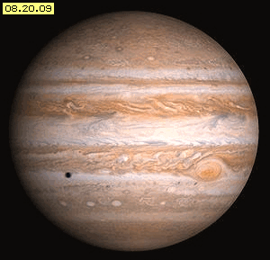
Jupiter und Saturn sind um eine Größenordnung mächtiger als die Erde, entsprechend stärker und weiter müssten ihre Äther-Whirlpools sein. Wie die Sonne sind sie keine starren Himmelskörper, sondern bestehen aus in sich beweglichem Gas. Also könnten hohe Dreh-Geschwindigkeiten bis nahe an ihre Oberflächen reichen. Aus den sichtbaren Bewegungen der Materie und deren Besonderheiten kann man die Merkmale ihres unsichtbaren Äther-Whirlpools ableiten.
Bild 08.20.09 zeigt zunächst ein Foto des Jupiters. Dieser Gasplanet ist nicht so heiß wie die Sonne mit deren ´Feuerstürmen´. Man war allerdings erstaunt, als Mess-Sonden in den äußeren Wolken lediglich minus 123 Grad Celsius (also fastgar ´warm´ für Weltraum-Verhältnisse) meldeten. Es sei noch einmal darauf hingewiesen, dass ´Temperatur´ die Geschwindigkeit der Partikelbewegungen benennt. Materielle Teilchen müssen aber nicht bewegungslos (und damit ´kalt´) sein, nur weil sie weit weg von einem Stern sind.
Wie bei der Sonne wäre es aberwitzig zu unterstellen, die Gas-Partikel würden sich aufgrund gegenseitiger ´Masse-Anziehung´ zusammen ballen. Vielmehr gibt es im Äther einen Druck-Gradienten vom chaotisch-engen Schwingen (z.B. des Freien Äthers) zum geordnet-weiträumigen Schwingen (z.B. in den Atomen). In einem Potentialwirbel wird darum das ´Stoffliche´ zum Zentrum geschoben. Je mehr Gas-Partikel von außen zusammen gedrückt wurden, desto größer wird der Gegen-Druck im Innern. Die Dichte steigt nur so weit an, bis ein Gleichgewicht des äußeren und inneren Drucks gegeben ist.
Darum behaupte ich bzw. ist es selbstverständlicher physikalischer Fakt: Im Zentrum von Himmelskörpern herrscht viel geringere Dichte als theoretisch unterstellt wird. Der Gas-Planet Jupiter weist weit weniger Masse auf als in gängiger Weise berechnet wird. Von außen wirkt nur statischer Druck, der an sich keinen Anstieg der Temperatur bewirkt. Die relative Wärme im Gas des Planeten muss also anderer Ursache sein.
Die Gase an seiner Oberfläche (und vermutlich hunderte oder tausende Kilometer tief) sind in höchst erstaunlicher Bewegung: Stürme mit bis zu 500 km/h rasen praktisch fortwährend umher, wirre Wirbel werden gebildet und vergehen oder es gibt geordnete Gürtel mit diversen Wirbelmustern - und einige Wolken wandern entgegen gesetzt zur generellen Linksdrehung. Man kennt z.B. den ´großen roten Fleck´ seit mindestens 300 Jahren - aber die Wissenschaft hat keine Erklärung für die Bewegungen an der Oberfläche des Jupiters.
Differenzierte Rotation
|
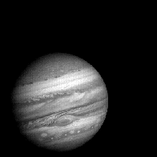 |
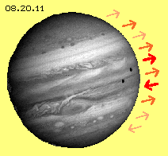 |
Diese Animation ist zusammen gesetzt aus Fotos, die beim Anflug der Raumsonde Voyager-1 entstanden, jeweils zur gleichen Jupiter-Tages-Zeit. Es ist zu erkennen, wie sich die ´Wolken´ verschieben, zusätzlich zur generellen Rotation der Jupiter-Oberfläche. Kurzfristig tauchen Flecken auf: die hellen zeigen Monde, die dunklen sind deren Schatten. Rechts daneben zeigt Bild 08.20.11 ein Foto aus dieser Animation. Die jeweilige Relativ-Bewegung von einigen markanten Schichten ist angezeigt durch unterschiedliche Pfeile.
Einerseits zeigt die Sonne total chaotische Bewegungen an ihrer Oberfläche, aber ihre ´differenziale Rotation´ ist wohl geordnet: die schnellste Drehung besteht am Äquator und zu beiden Polen nimmt die Geschwindigkeit gleichförmig ab. Bei Jupiter ist es umgekehrt: einerseits weist er geordnete Bewegungsmuster auf, wie man sie von Luft- oder Wasser-Strömungen kennt, zeitweilig z.B. richtig schöne Wirbel-Zöpfe. Andererseits zeigt seine Oberfläche diverse Zonen und Gürtel, in denen die Drehgeschwindigkeiten höchst unterschiedlich sind. Teilweise ist die Bewegungsrichtung benachbarter Bereiche sogar gegenläufig.
Für eine ´rotierende Kugel´ ist es geradezu ´absurd´, dass ihre Pol-Regionen gegenläufig drehen. Ein weiteres Phänomen stellt der ´große rote Fleck´ dar. Dieser Wirbelsturm ist größer als die Erde. Er dreht seit ´ewigen Zeiten´ an der gleichen Stelle auf der Jupiter-Oberfläche (rotiert mit dieser also ein mal binnen etwa zehn Stunden).
Allerdings wird er von Zeit zu Zeit etwas schwächer und andererseits kommen zeitweilig zusätzliche Flecken auf. Auch manche der markanten Gürtel verschwinden gelegentlich und tauchen etwas später unvermittelt wieder auf.
All diese Erscheinungen sind nach heutiger Lehre nicht zu erklären. Diese Bewegungen sind z.B. nicht mit dem ´Wetter´ auf der Erde vergleichbar. Auf dem Jupiter gibt es kein Meer und kein Land mit unterschiedlicher Aufheizung und Abkühlung. Es gibt dort keine Gebirge, welche die Richtung von Strömungen beeinflussen könnte. Es gibt noch nicht einmal Ansatzpunkte für ein Verständnis des seltsamen Benehmens dieses Gas-Planeten.
Strömung durch Sog und Druck und Sonne
Gas-Partikel kann man nicht im Raum vorwärts schieben wie einen Festkörper. Sie fliegen von sich aus immer nur geradewegs von einer Kollision zur nächsten. Die Distanzen zwischen zwei Kollisionen sind um so länger, je weniger Partikel in einem Bereich vorhanden sind. Wenn in benachbarten Bereichen die Dichte unterschiedlich ist, fliegen die Partikel automatisch vom Bereich hoher Dichte zum Bereich niedriger Dichte.
Nur aus diesem Grund gibt es Strömung in Gasen. Dabei wirkt der ´Sog´ keinesfalls anziehend, dort wird nur mehr Raum geboten. Die Partikel werden nicht aufgrund eines ´Drucks´ irgendwohin befördert. Sie fliegen immer nur in die Richtung, in welche sie bei der letzten Kollision zufällig gestoßen wurden. In Richtung einer Strömung kommen sie um so schneller voran, je höher ihre mittlere Geschwindigkeit zwischen den Kollisionen ist. Diese generelle Beschleunigung wird z.B. erreicht, wenn die Sonne die irdische Atmosphäre und Oberfläche ´aufheizt´.
Auf der Erde ist somit die Sonne der Auslöser von atmosphärischen Bewegungen. Jupiter ist fünf mal weiter entfernt und entsprechend geringer ist die von der Sonne eintreffende Energie. Mangels topographischer Hindernisse würden sich atmosphärische Bewegungen anders entwickeln. In keinem Fall aber könnten aus ´meteorologischen´ Gründen die teilweise gegenläufigen Wirbel- und Strömungsbänder entstehen. Die Ursache dieser Bewegungsmuster muss also eine andere sein.
Strömung durch Äther-Schub
Die zweite Quelle für die Bewegung materieller Partikel im Raum ist obiger Schub aus asymmetrischen Ätherbewegungen und der schlagenden Komponente, die unvermeidlich dabei auftreten. In Bild 08.20.12 ist bei A die Scheibe eines Whirlpools skizziert. Von außen nach innen wird die Schubkomponente stärker (siehe unterschiedliches Rot und Pfeile). Die Kurve B verdeutlicht die jeweilige Schub-Geschwindigkeit. Zum Zentrum hin wird die Rotation wieder verzögert (hellrot), z.B. durch die starre Erde oder auch die vielen Gas-Partikel der Sonne.
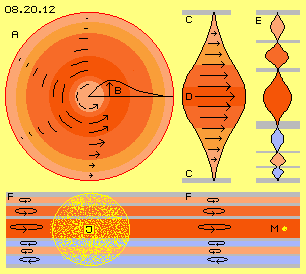
Solche Whirlpools sind relativ flache Scheiben, die oben und unten durch Freien Äther begrenzt sind. Dessen neutrales Schwingen ist hier als graue Ebenen C markiert. Zwischen diesen ruhigen Flächen kann der Äther weiträumiger schwingen, wie durch den Doppelkegel D und Pfeile unterschiedlicher Länge angezeigt ist. Die Whirlpools der Erde und der Sonne weisen also im Prinzip das Bewegungsmuster einer ´einfachen Kurbel´ auf. Diese Darstellung ist rein schematisch. Real schwingt nicht eine einzige Verbindungslinie kilometerweit im Kreis herum. Vielmehr ist jedes einzelne Schwingen und Schlagen ´quanten-klein´ und erst aus den synchronen und extrem schnellen Bewegungen des Äthers ergibt sich die vergleichsweise langsame, aber weiträumige ´Strömung´ materieller Partikel im Raum.
Mehrschichtige Scheibe
Wenn ein fester Körper im Zentrum eines Wirbels ist, wird ein Potentialwirbel zwangsweise ´eingebremst´ auf einen starren Wirbel im Zentrum. Dort kann es keine Schichten unterschiedlicher Winkelgeschwindigkeit oder gar gegenläufigen Drehsinns geben. Wenn aber im Zentrum eines Whirlpools eine in sich bewegliche Gas-Kugel existiert, ist ´differenziale Rotation´ möglich, wie bei der Sonne und praktisch allen Gas-Planeten. Entlang der Rotations-Achse weisen die Bewegungen im Zentrum die größte Intensität aus, die sich im Raum darüber und darunter abschwächt (wie schematisch durch obige Einfach-Kurbel dargestellt ist).
Der Whirlpool des Jupiters ist ´von Geburt an´ anders aufgebaut oder er wurde im Laufe der Zeit durch ´heftige Schicksalsschläge´ deformiert. Sein prinzipielles Bewegungsmuster ist in diesem Bild oben rechts bei E skizziert. Es gibt viele graue Zonen, welche relativ neutrale Bewegungen aufweisen. Jeweils dazwischen gibt es Gürtel mit einem Schwingen unterschiedlicher Intensität (siehe unterschiedliches Rot). Von Schicht zu Schicht kann der Drehsinn wechseln: normalerweise links-drehend (rot) und hier nun auch die gegensinnige Rechts-Drehung (blau). Anstatt der vorigen simplen Einfach-Kurbel weist der Jupiter-Whirlpool das prinzipielle Bewegungsmuster eine ´Mehrfach-Kurbel´ auf. Dadurch sind die internen Bewegungen viel-schichtig und sehr viel komplexer.
Primäre und sekundäre Bewegung
Unten in diesem Bild ist schematisch ein Ausschnitt quer durch den Jupiter-Whirlpool dargestellt mit seinen diversen Schichten (grau, rot oder blau markiert). Auf jeder Ebene existiert eine andere Art von Äther-Schwingen. In jeder Schicht ist diese Bewegungsform aber durchgängig. Dieses komplexe vertikale Bewegungsmuster F ist also in horizontaler Ebene links wie rechts gegeben. Das ist das primäre Äther-Schwingen auf den diversen Schichten dieses Whirlpools.
In einem Whirlpool wird der ´Staub´ immer zur Mitte geschoben. In die Wirbelschichten sind hier gelbe Pünktchen J eingestreut, welche die Wolke aus Gas-Partikeln des Planeten Jupiter repräsentieren. Als eine sekundäre Bewegung werden nun diese materiellen Partikel durch das Schlagen des Äther-Schwingens im Kreis herum geschoben. In jeder Schicht rotiert damit das Gas entsprechend zur originären Äther-Bewegung der jeweiligen Ebene. Weiter außen werden auch Monde (M, gelb) entsprechend zum dortigen Schlagen um den Jupiter herum geschoben.
In jedem Gas gibt es Wirbel oder turbulente Strömungen, die sich früher oder später auflösen aufgrund der internen Reibungsverluste materieller Bewegungen. Also müßte auch eine Gas-Wolke wie Jupiter bald zum Stillstand kommen. Die Gas-Atome sind nur winzig kleine, lokale Bewegungsmuster aus Äther im Äther. Alle zusammen haben nur eine geringe ´Masse´ und ihre Bewegungen haben nur geringe ´kinetische Energie´ - in Relation zum Volumen und zur ´Beharrlichkeit´ der Bewegungen von allem lückenlosen Äther, welcher im riesigen Jupiter-Whirlpool involviert ist. Wie bei der Sonne oder der Erde: das Staubkorn im Zentrum eines Äther-Whirlpools ist nahezu unbedeutend. Die ´Masse´ allen Äthers und die Trägheit seiner Bewegungen ist unendlich größer als die der ´materiellen´ Wirbelchen - und darum bestimmt der Äther (-Whirlpool) das Verhalten von Materie.
Tertiäre Bewegung
Auf der Oberfläche des Jupiters sind nun tertiäre Bewegungen sichtbar, die auf den Eigenschaften der Gase beruhen. Oben links in Bild 08.20.13 ist zunächst schematisch eine schwingende Ebene A (hellrot) und darunter eine schwingende Ebene B (dunkelrot) skizziert, dazwischen einen neutrale Zone C (grau). Beide schwingende Ebenen weisen eine schlagende Komponente auf, angezeigt durch die nach rechts weisenden Pfeile.
Ausgehend von der grauen Ebene wird das Schwingen nach oben und unten weiträumiger, wie durch die konusförmigen Verbindungslinien schematisch markiert ist. Im lückenlosen Äther gibt es dabei keine Reibung, weil sich die vertikal benachbarten Ätherpunkte synchron zueinander bewegen, hier nach oben bzw. unten nur graduell auf etwas weiteren Bahnen. Ganz anders verhalten sich die materiellen Partikel des Gases: sie driften zwar prinzipiell in der jeweilige Richtung des Schlagens, aber nicht als ein fest gefügter Verbund, sondern jedes Teilchen separat und mit Abstand zwischen den Gas-Atomen.
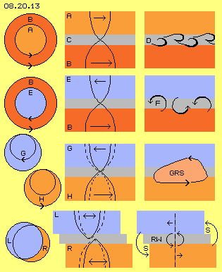
Dadurch kommt es zu Zusammenstößen, so dass binnen kurzem die Atome zwar prinzipiell vorwärts fliegen, aber auch kreuz und quer (wie üblich bei der normalen molekularen Bewegung). Besonders an den Übergängen zwischen den Schichten werden die ´Querschläger´ abgebremst oder beschleunigt. Es kommt zu ungeordneten Turbulenzen oder es können sich geordnete Bewegungsmuster ausbilden, z.B. als Wirbel-Strasse wie bei D skizziert ist.
In der zweiten Zeile dieses Bildes ist unten wieder die schwingende Ebene B (rot) dargestellt, darüber aber eine Ebene E (blau) mit gegen-sinnigem Schlagen (siehe Pfeile). Im Äther sind diese Bewegungen wiederum reibungsfrei möglich, weil der Übergang in der neutralen Zone problemlos statt findet. Die materiellen Gase aber werden zwischen den gegenläufigen Strömungen ´aufgerieben´. Wie hier rechts angedeutet ist, entstehen im Grenzbereich gegenläufige Wirbel F. Dort gibt es Turbulenzen, die sich nur in unregelmäßigen Mustern gegenseitig eliminieren können. Der Ausgleich dieser gegenläufigen Strömungen tangiert nicht nur die sichtbare Oberfläche, sondern wird ´Strudel´ auch unter der Oberfläche auslösen.
Stationäre Wirbel
In Bild 08.20.13 sind in der dritten Zeile zwei Doppel-Schleifen (analog Bild 08.20.07 bei B) eingezeichnet. Die Schleife G (blau) ist rechts-drehend oberhalb der neutralen Zone, unterhalb davon ist die Schleife H (rot) links-drehend. Beide Schichten schwingen synchron, aber gegenläufig zueinander. Wenn ein Ätherpunkt bei G an seinem innersten Bahnpunkt ist, befindet sich ein Ätherpunkt H an seinem äußersten. Am innersten Punkt der Bahn (bei G) ist die Bewegung sehr langsam, am äußersten Punkt der Bahn (bei H) viel schneller. An dieser Stelle ist die Differenz der Geschwindigkeiten immer maximal. Genau dort bildet sich fortwährend ein Wirbel, z.B. der Große Rote Fleck (GRS, hellrot).
Dieser markante Wirbel wird seit langer Zeit ´stationär´ zur generellen Rotation des Gas-Planeten mit geführt. Natürlich ´bohrt´ sich dieser Wirbel auch tief in den Planeten hinein. Gerade weil dieser ´Zyklon´ mit einem langen Wirbel-Schlauch im Inneren des Jupiters verankert ist, rotiert er so stabil und ortsfest auf der Oberfläche. Allerdings, bei anderer Relation der überlagerten Bewegungen in benachbarten Schichten können solche Wirbelkomplexe an der Oberfläche auch vorwärts oder rückwärts wandern. Solch ´kleine rote Flecken´ erscheinen gelegentlich und verschwinden auch wieder.
Taumelndes Schwingen
Der Äther als solcher ist auf kleinsten Radien schwingend. Das Schwingen kann aber auch ausgeweitet sein, z.B. indem das Zentrum einer kreisenden Bewegung wiederum auf weiterem Radius im Raum wandert. In obigem Bild 08.20.07 wurden bei A und B zwei Beispiele genannt in Form des ´Rosetten-Musters´ und einer ´Doppelschleife´. Auch schon zu Beginn, bei Bild 08.20.02 und den zugehörigen Animationen, wurden Beispiele aufgeführt mit Flächen, die mit unterschiedlicher Frequenz schwingen. Als zwingende Konsequenz resultiert daraus, dass die Schichten gegeneinander verschoben sind. An den Rändern gibt es überstehende Teilflächen. Obwohl die eigentliche Ursache nur kleinräumige Bewegungen sind, rasen solche ´Sicheln´ um den ganzen Umfang des Systems (Details siehe oben). Mit großer Wahrscheinlichkeit tritt auch an der Oberfläche des Jupiters diese Erscheinung auf.
In vorigem Bild 08.20.13 sind in der unteren Zeile diese Merkmale schematisch skizziert. Über einer neutralen Zone (grau) befindet sich eine schwingende Fläche L (blau), die momentan etwas nach links versetzt ist. Darunter befindet sich eine schwingende Fläche R (rot), die momentan etwas weiter rechts positioniert ist. Beide Flächen können links- oder rechtsdrehend sein (siehe Doppelpfeile).
Diese Flächen reichen über die Gas-Wolke des Jupiters hinaus, so wie die diversen Äther-Schichten weit über diese mittige Ansammlung von Partikeln hinaus reichen. Die schlagende Komponente im Whirlpool weist immer im Kreis herum. Allerdings ist in diesem Beispiel momentan der Mittelpunkt des blauen Kreises L etwas nach links gewandert. Damit hat das Schlagen auch alle dortigen Partikel nach links geführt. Umgekehrt verhält sich in diesem Beispiel zugleich der rote Kreis darunter: dessen Mitte und damit auch die dortigen Partikel sind momentan nach rechts versetzt.
Rand-Wirbel
Es gibt damit ´überhängende´ Ränder: die blaue Fläche ragt links ´ins Freie´ und rechts befinden sich über der roten Fläche keine Partikel mehr (dort schwimmen im Äther momentan keine ´materiellen´ Wirbelkomplexe). Wie oben ausgeführt wurde, herrscht in Gasen immer chaotische Bewegung, die einzelnen Partikel kollidieren und fliegen in irgend eine Richtung.
Ganz rechts über der roten Fläche ist momentan eine ziemliche ´Leere´, welche praktisch einen Sog-Bereich S darstellt. Wenn Partikel zufällig dorthin gestoßen wurden, können sie relativ weite Strecken zurück legen, bis zur Behinderung durch eine nachfolgende Kollision. Die Partikel fehlen an ihrem Herkunftsort als Kollisions-Partner. Viele Partikel können in Richtung obiger ´Leere´ fallen und damit kommt sich eine materielle Strömung zustande.
Wie oben bei Bild 08.20.02 in den Animationen deutlich wurde, laufen diese sichelförmigen Überschneidungen um das System in variierender Intensität. Diese Flächen repräsentieren den Kreis, in welchem das Schlagen jeweils tangential ausgerichtet ist. Wenn sich dieser Kreis verlagert, verschieben sich auch die Ansammlungen materieller Partikel. Im jeweiligen Sog-Bereich ergeben sich Randwirbel (siehe Pfeile S). Diese laufen rundum auf der Planeten-Oberfläche. In der Regel werden sie gegensinnig drehen und sich gegenseitig eliminieren oder zu Strudeln einrollen, wobei sich z.B. die Rotationsachse radial in den Planeten hinein ´bohrt´.
Kerbe beim Großen Roten Fleck
Seit vierhundert Jahren wird nun der Große-Rote-Fleck beobachtet. Jeder Hobby-Astronom kennt ihn und selbst mit einem Fernglas ist er zu erkennen. Ein Jupitertag dauert knapp zehn Stunden, der Fleck ist also nicht immer sichtbar. Man muss auf den linken Rand achten: wenn eine ´Kerbe´ zu sehen ist, folgt dort der RGS.
Das ist ein deutlicher Hinweis darauf, dass meine obigen Behauptungen hinsichtlich der Schichtung des Äthers, des differenzierten Schwingens inklusiv der seitlichen Verlagerungen sowie der sich daraus ergebenden Bewegungsmuster an der Oberfläche des Jupiters zutreffend sind - und damit erstmals streng logisch abgeleitete und verständliche Antworten für die bislang völlig unerklärlichen Phänomene vorliegen.
Galileische Monde
Der Jupiter wird von vielen Monden umkreist (derzeit sind etwa 63 bekannt), aus deren Bewegungen zusätzliche Merkmale seines Äther-Whirlpools abzuleiten sind. In der Graphik 08.20.14 sind einige dieser Himmelskörper aufgelistet mit der Distanz zum Jupiter-Zentrum (in tausend Kilometer TKM bzw. Millionen Kilometer MKM ), der Umlaufdauer (in Stunde h oder Tagen d) und ihrer durchschnittlichen Geschwindigkeit (in km/s). Diese ist auch als Kurve (rot markiert) am rechten Rand schematisch abgetragen.
Wie oben bereits angeführt, weist der Jupiter einen Radius von rund 71200 km auf. In knapp zehn Stunden führt er eine Umdrehung aus. Am Äquator ist somit eine Geschwindigkeit von rund 12.6 km/s gegeben.
In 1610 entdeckte Galileo Galilei vier Monde, die darum ´galileische Monde´ (GM) genannt werden. Diese Monde sind Io, Europa, Ganymed und Callisto. Sie haben einen Durchmesser von etwa 3000 bis 5000 km. Sie umkreisen den Jupiter im Abstand von etwa vierhundert tausend bis knapp zwei Millionen Kilometer. Eine Umdrehung dauert etwa zwei Tage bis zwei Wochen. Der innere Mond Io fliegt mit 17.3 km/s am schnellsten, der äußere Mond Callisto ist mit rund 8.2 km/h nur etwa halb so schnell.
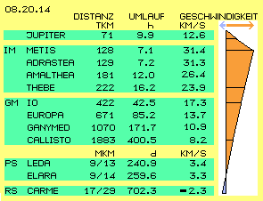
Innere Monde
In 1892 wurde ein Gesteinsbrocken (etwa 135*84*75 km groß) entdeckt, wobei dieser Amalthea-Mond erstaunlich niedrig über der Jupiter-Oberfläche herum fliegt. Erst hundert Jahre später wurden noch drei ´Innere Monde´ (IM) erkannt. Metis fliegt mit einer Höhe von nur 128000 km nochmals niedriger, Thebe mit rund 222000 km etwas weiter außen. Der innerste Mond fliegt also nur etwa 57000 km über der Oberfläche.
Zum Vergleich: das ist etwas höher als bei uns die geostationären Satelliten fliegen. Unser Mond dreht am Radius von rund 384000 km, also in einer Höhe zwischen den Inneren Monden und den Galilei-Monden. Unser Mond ist mit einem ´müden´ Kilometer je Sekunde unterwegs. Diese inneren Monde fetzen mit 24 bis zu 32 km/s über den Himmel des Jupiters. Die beiden inneren brauchen für eine Umrundung nur etwa sieben Stunden, rotieren also schneller als Jupiter selbst.
Das entspricht dem typischen Merkmal eines Potentialwirbels: vom äußeren Galilei-Mond Callisto steigt die Drehgeschwindigkeit zum innersten Mond Metis (von 8.2 auf 31.4 km/s) progressiv an. Weiter nach innen wird die Geschwindigkeit ebenso progressiv herunter gebremst auf die 12.6 km/s am Jupiter-Äquator. Wie bei der Sonne reicht die schnelle Bewegung bis nah zur Oberfläche. Erst durch die Turbulenzen in der Ansammlung von Gaspartikeln wird die Drehung des Wirbels stark verzögert - und das allein ist die Ursache der ´Wärme´ in den Gas-Planeten.
Prograde Satelliten
Sehr viel später (1904, 1905, 1938, 1973) wurden ´irreguläre Monde´ entdeckt mit noch erstaunlicheren Bahnen. Man vermutet, dass es ´Fremdlinge´ sind und bezeichnet sie darum als Satelliten. Es handelt sich um Gesteinsbrocken bis zu 200 km Durchmesser. Hier in der Graphik sind Leda und Elara als Beispiele dieser Prograden Satelliten (PS) aufgeführt (dazwischen sind Himalia und Lystithea mit ähnlichen Daten). Sie fliegen auf sehr exzentrischen Bahnen, z.B. zwischen Höhen von 9 und 14 Millionen Kilometer. Ein Umlauf dauert rund acht Monate, die Geschwindigkeit liegt im Durchschnitt bei etwa 3.3 km/s.
Die vier Inneren und die vier Galilei-Monde umkreisen den Jupiter auf Höhen von wenigen tausend bis zwei Millionen Kilometer und sie bewegen sich nahezu exakt auf der äquatorialen Ebene. Im Gegensatz dazu weisen die vier ´irregulär-prograde Satelliten´ besondere Merkmale auf: sie fliegen auf ähnlichen, aber sehr exzentrischen Bahnen, sie weisen mit 26 bis 28 Grad eine ähnliche Neigung zur äquatorialen Ebene auf, alle sind links-drehend, also ´prograd´.
Retrograde Satelliten
Im letzten Jahrhundert wurden ein paar ´irregulär-retrograde Satelliten´ (RS) entdeckt. Deren gemeinsames Merkmal ist, dass sie entgegen gesetzt, also rechts-drehend den Jupiter umkreisen. Hier ist als Beispiel der etwa 40 km große Gesteinsbrocken Carme aufgeführt. Die Bahn ist weit außerhalb der vorigen Himmelskörper, mit Höhen zwischen 17 und 29 Millionen Kilometer extrem exzentrisch bzw. versetzt. Alle retrograden Satelliten weisen eine ähnliche Inklination gegenüber der äquatorialen Ebene auf: zwischen 145 bis 165 Grad (also mit 15 bis 35 Grad Abweichung).
Der Satellit Carme braucht für eine Umrundung des Jupiters fast zwei Jahre. Seine Geschwindigkeit ist 2.3 km/s, rückwärts drehend. Darum ist diese Geschwindigkeit negativ gekennzeichnet bzw. blau markiert am rechten Rand der Graphik. In diesem Jahrhundert werden ständig neue ´Vagabunden´ mit diesen Merkmalen entdeckt (derzeit sind insgesamt 63 ´julianische´ Himmelskörper bekannt).
Systemwidrige Erscheinung
Die retrograden Monde stellen eine Ausnahme im Sonnensystem dar, indem sie sich gegen den generellen Drehsinn des gesamten Systems bewegen. Wenn die Sonne und die Planeten aus einer sich eindrehenden Gas-Wolke entstanden wären, müsste sich alles im ursprünglichen Drehsinn bewegen. Diese retrograden Satelliten laufen der gängigen Lehre zuwider. Darum dürften diese retrograden Gesteinsbrocken nur von außerhalb stammen, die von Jupiter im Laufe der Zeit ´eingefangen´ wurden.
Noch gravierender allerdings ist das Dilemma für meine Behauptung: Himmelskörper werden nicht per Gravitations-Anziehungskraft zu einer zentralen Masse hin gezogen, vielmehr driften sie lediglich im Drehsinn eines Whirlpools im Kreis herum, rein passiv. Wenn aber der Whirlpool z.B. des Jupiters im Zentrum links-drehend ist (mit Ausnahme einiger rück-drehender Schichten oder Wirbelkomplexe) und wenn die zentrumnahen Monde links-drehend sind - dann können nach dieser Logik weiter außen keine Gesteinsbrocken entgegen gesetzt durch den Raum driften. Wenn es dazu keine vernünftige Antwort gibt - könnte man die gesamte Theorie dieses Äther-Verständnisses vergessen.
Ringe des Saturn
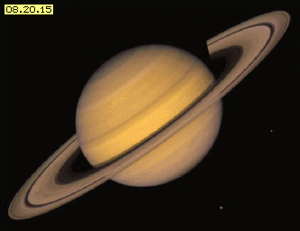
Vielleicht ist diese Problematik lösbar, wenn man den kleineren Gas-Planeten Saturn einbezieht. Bild 08.20.15 zeigt die eindrucksvolle Erscheinung. Auch Saturn zeigt Streifen und eine differentiale Rotation, aber insgesamt ist die Oberfläche sehr viel gleichmäßiger als bei Jupiter und der Sonne. Einmalig ist die filigrane Scheibe des Saturn-Ringes: fast eine Million Kilometer ist ihr Durchmesser, aber extrem dünn mit gerade mal hundert Meter. Die Scheibe besteht aus Eis- und Gesteinsbrocken mit der Größe eines Staubkorns bis zum Durchmesser von ein paar Meter. Die Scheibe ist unterteilt in etwa hundert einzelne Ringe. Wie auf diesem Bild sind meist nur die Ringe A und B sichtbar. Es ist bis heute nicht geklärt, wie diese schmale Scheibe entstehen konnte. Die dünne und scharf abgegrenzte Kontur kann nicht bedingt sein durch gegenseitige Anziehungskräfte der beteiligten Massen. Eine Erklärung ist nur aufgrund von Äther-Bewegungen möglich.
In Kapitel ´08.17. Äther-Wirbel der Erde´ wurde unter anderem dargestellt, unter welchen Bedingungen ein Objekt in einem Whirlpool eingefangen wird und wie sich Objekte darin bewegen. In folgendem Bild 08.20.16 ist oben links eine entsprechende Zeichnung wiederholt. Ein Whirlpool ist linksdrehend und die von außen nach innen ansteigende Geschwindigkeit ist durch unterschiedliches Grün markiert. Ein festes Objekt (A, schwarz) bewegt sich darin auf einer ´eckigen´ Bahn (schwarze Kurve). Wann immer dieser Brocken nach außen schwebt, wird er von hinten-seitlich wieder einwärts geschoben (siehe B und die radialen Pfeile bzw. roten Abschnitte). Dieser Anpassungsprozess des Hinaus-Fallens und Hinein-Drückens wird so lange statt finden, bis das Objekt einen adäquaten Radius erreicht hat. Erst wenn die Geschwindigkeit des Objekts mit dem dortigen Schub übereinstimmt, wird eine fast ´kreisrunde´ Bahn erreicht (sofern nicht erneute Störungen auftreten).
In diesem Bild rechts oben ist dargestellt, dass immer die inneren Objekte schneller drehen (siehe Pfeile C). In den Ringen des Saturn-Whirlpools werden also immer die inneren Brocken ihre äußeren Nachbarn überholen. Die unterschiedliche Größe dieser Klumpen (siehe D) führt dabei zu relativ ähnlichen Geschwindigkeiten. Wann immer zwei Brocken unterschiedlicher Masse kollidieren, wird die Geschwindigkeit des schwereren kaum verändert. Umgekehrt geht bei jeder Kollision ein Anteil der kinetischen Vorwärtsbewegung des leichteren Brockens verloren. Daraus ergibt sich eine gleichförmige Verteilung der Geschwindigkeiten.
Schub in drei Richtungen
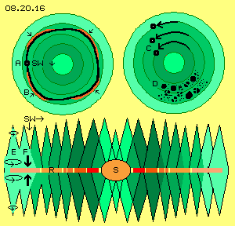
Unten in diesem Bild ist schematisch ein Längsschnitt durch den Saturn-Whirlpool dargestellt. In der äquatorialen Ebene des Saturn (S) liegt der Ring (R) als eine sehr dünne Scheibe. Die von außen nach innen zunehmende Drehgeschwindigkeit ist durch unterschiedliches Rot gekennzeichnet. Der Whirlpool des Saturn hat Schub-Wirkung auf materielle Partikel in drei Richtungen. Es besteht erstens ein Druck-Gradient von außen nach innen (der die Ansammlung von Gas-Partikeln im Zentrum bewirkt). Es besteht zweitens ein Schub in tangentiale Richtung (welcher materielle Partikel um das Zentrum driften lässt, von außen nach innen stärker, hier repräsentiert durch diverse Kegel von hellgrün bis dunkelgrün).
Diese beiden Effekte wirken in der (horizontalen) Ebene des Whirlpools. Ein dritter Druck-Gradient besteht senkrecht dazu (hier also in vertikaler Richtung). Von oben bis zur äquatorialen Ebene wird das Schwingen zunehmend weiter. Spiegelbildlich dazu verhält sich das Schwingen unterhalb dieser Ring-Ebene, wie hier durch den Doppelkegel und die Kreis-Pfeile bei E angezeigt ist. Daraus ergibt sich ein Schub (siehe Pfeile F) auf materielle Teilchen zur äquatorialen Ebene hin. Dieser Druck-Gradient ist gleichermaßen gegeben, unabhängig von der Distanz zum Zentrum des Wirbels. Alle ´Schwebstoffe´ dieses Bereiches werden damit in Form einer Scheibe zusammen gerückt. Offensichtlich gibt es bei Saturn in diesem Bereich kaum störende Einflüsse, sonst könnte es nicht diese messer-scharfen Abgrenzungen geben. Lange Zeit galten die Ringe des Saturn als einzigartige Erscheinung im Sonnensystem. Inzwischen kennt man diverse Ringe, aber weniger scharf gezeichnet oder kaum sichtbar.
Schön drehende Ringe
In Bild 08.20.17 sind einige Daten aufgeführt sowie Distanzen und Geschwindigkeiten graphisch dargestellt, oben für den Saturn-Ring und unten für die Saturn-Monde. Der Radius des Saturn ist 60000 km (= 60 Tkm). Der innerste Ring beginnt schon 7000 km über der Saturn-Oberfläche. Danach ist die Scheibe in diverse Abschnitte unterteilt. Letztlich reicht der äußere Ring E vom 3-fachen bis 8-fachen des Saturn-Radius hinaus (von 180 bis 480 Tkm).
Eine Umdrehung der Ringe dauert wenige Stunden bis maximal vier Tage. Die Dreh-Geschwindigkeit ist außen etwa 8.7 km/s und steigt innen bis über 20 km/s an. Innerhalb der Ringe sind einige ´Hirten-Monde´ eingebettet, die sich konform dazu verhalten. Die turbulente Ansammlung der Gas-Partikel mit ihren nur 10.2 km/s am Äquator bremst den riesigen Äther-Wirbel im Zentrum herunter. Insofern entsprechen die Bewegungen des Saturn-Ringes durchaus denen der anderen Äther-Whirlpools. Lediglich diese präzise Ausrichtung der dünnen Scheibe ist Ausprägung besonders gleichförmiger Ätherbewegungen - und es ist zweifelhaft, ob diese langfristig in solch reinen Form bestehen können.
Wirr drehende Monde
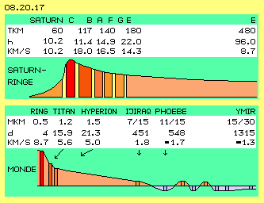
Diese Ordnung ist bei den äußeren Monden des Saturn nicht mehr gegeben und ihre Bahnen sind kaum nachvollziehbar. Im unteren Teil des Bildes sind dazu einige Daten aufgeführt.
Die Ringe reichen etwa eine halbe Million Kilometer (0.5 Mkm) hinaus und drehen dort mit etwa 8.7 km/s. Beim Radius von 1.2 Mkm dreht der Titan einsame Runden. Ein Umlauf dauert fast 16 Tage und seine Geschwindigkeit ist nur noch etwa 5.6 km/s. Etwas außerhalb davon gibt es den Mond Hyperion mit ähnlichen Daten.
Dann klafft eine große Lücke z.B. bis zum Mond Ijiraq. Dieser Brocken von 12 km Durchmesser taumelt auf einer extremen Bahn in Höhen zwischen 7 und 15 Millionen Kilometer herum. Ein Umlauf dauert 15 Monate mit einer durchschnittlichen Geschwindigkeit von nur noch 1.8 km/s. Ein großes Objekt von etwa 240 km Durchmesser ist Phoebe in vergleichbarer Höhe von 11 bis 15 Mkm. Mit lahmen 1.7 km/s umkreist dieser Mond binnen 548 Tagen den Saturn - allerdings rückdrehend. Außerhalb davon gibt es noch viele Monde mit Durchmessern von nur wenigen Kilometer. Sie sind vor- oder rückläufig, ab etwa 18 Mkm sind aber alle retrograd drehend (blau markiert). Zwischen 15 und 30 Mkm Höhe ´schleicht´ z.B. Ymir mit 1.3 km/s binnen vier Jahren rückdrehend um den Saturn.
Wie alle Gas-Planeten weist der Saturn eine differenziale Rotation auf. Seine Oberfläche ist aber sehr viel weniger ´stürmisch´ als die des Jupiters. Im Bereich der Ringe und der dort eingebetteten Monde weist der Äther-Wirbel des Saturn ein besonders gleichförmiges Bewegungsmuster auf. Die Monde bzw. ´natürliche Satelliten´ im äußeren Umfeld bewegen sich aber genauso chaotisch wie die des Jupiters. Insofern hat der schöne Saturn-Ring nichts zur Klärung des Problems beigetragen. Es hat sich vielmehr bestätigt, dass im Innenbereich dieser Whirlpools durchaus Ordnung herrscht, die im Außenbezirk nicht wieder zu erkennen ist.
In Bild 08.20.18 repräsentieren die gelben Kurven die wirren Bahnen der retrograden Satelliten des Jupiters. Die Bahnen sind stark exzentrisch und reichen von 7 bis 30 Millionen Kilometer hinaus. Die Bahnen sind nicht elliptisch und Jupiter steht nicht in einem Brennpunkt. Die Satelliten fliegen unterschiedlich schnell, aber die Geschwindigkeiten in den einzelnen Abschnitten entsprechen nicht den theoretisch erforderlichen. Die Bahnen ´taumeln´ um das Zentrum und somit verhalten sich diese retrograde Objekte tatsächlich ´irregulär´.
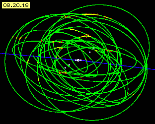
Es gibt nur wenige ´reguläre´ und prograd-drehende Monde. Sie bewegen sich in wesentlich geringerer Höhe und alle auf einer um 27 Grad angestellten Ebene (siehe weiße Punkte). Die ´galileischen Monde´ fliegen in nächster Nähe um Jupiter herum, nahezu exakt auf der Ebene der Ekliptik (blau). Deren Verhalten lässt sich mit dem Whirlpool erklären und auch die Neigung von etwa 27 Grad entspricht vermutlich dem ´galaktischen Wind´ (siehe frühere Kapitel). Offensichtlich fliegen die irregulären Objekte schon außerhalb des Äther-Whirlpools bzw. in dessen Randwirbel herum.
Rand-Wirbel der Äther-Wirbel
Mit Bild 08.20.19 wird dargestellt, welche Bewegungsmuster am Rand des Jupiter-Äther-Wirbels auftreten können. Oben links ist bei A zunächst eine ´Doppelkurbel´ gezeichnet, welche z.B. in kleiner Dimension ein Elektron darstellt. Wenn oben der Äther momentan nach links schwingt, bewegt er sich unten zugleich nach rechts (und umgekehrt). Auf engem Raum findet somit ein Ausgleich statt, indem das horizontale Schwingen ergänzt wird um ein korrespondierendes Schwingen in vertikaler Richtung (siehe Pfeile). Dieses Muster ist also prädestiniert für eine lokal begrenzte Bewegungseinheit.
Bei Jupiter existiert eine differentiale Rotation, d.h. der Äther schwingt unterschiedlich in diversen Ebenen, wobei sich die einzelnen Kurbeln sogar gegensinnig drehen können. In diesem Bild sind rechts oben solche ´gegenläufigen Kurbeln´ eingezeichnet. Viele sind direkt nebeneinander synchron schwingend, so dass eine ausgedehnte blaue Schicht B momentan nach links schwingt. Darunter gibt es eine breite rote Schicht C, die sich momentan nach rechts bewegt. Dazwischen befindet sich eine graue, neutrale Zone.
Im Gegensatz zu vorigem kleinen Elektron-Schwingungsmuster findet hier der Ausgleich erst weit außen am Rand dieser schwingenden Flächen statt. Oben bei Bild 08.20.13 wurde dargestellt, wie materielle Gas-Partikel auf unterschiedliches Schwingen benachbarter Ätherschichten reagieren. Per ´Sog-Wirkung´ ergeben sich dort Turbulenzen oder geordnete Wirbelstrassen oder gar riesige stationäre Wirbelstürme. Das Schwingen dieser Ätherschichten reicht aber weit über die Oberfläche des Gas-Planeten und deren materielle Bewegungen hinaus.
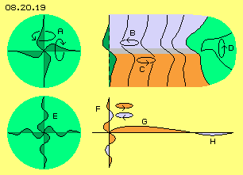
Die Situation entspricht der bereits in Bild 02.20.02 dargestellten Bewegung. Dort zeigten besonders die schwingenden Kreise (in der Animation rechts) den veränderlichen Überhang am Rande. Erst in diesen äußeren Bereichen werden die kontroversen Bewegungen ineinander übergehen bzw. wird ein Ausgleich statt finden, z.B. wie hier in Bild 08.20.19 oben rechts im grünen Bereich D skizziert ist.
Bislang wurde nur das Schwingen in horizontaler Richtung diskutiert. Mit diesem Ausgleich zwischen den Schichten kommt nun eine Bewegung in vertikaler Richtung hinzu (siehe Pfeil D): die Bewegungen laufen ´um die Ecke´, schwingen von unten nach oben und wieder zurück. Die gegensinnig schwingenden Schichten des Jupiters könnten mit solchen Randwirbeln abrupt enden. Wie bei vorigen materiellen Randwirbeln wird es allerdings nicht rundum und überall einen perfekten Ausgleich geben können. Darum wird es in den Randbereichen des Jupiter-Whirlpools auch turbulente Bewegung geben.
Magnetosphäre
Es gibt höchst unterschiedliche Daten zur Magnetosphäre des Jupiters. Zur Sonne hin soll sie 3 oder 7 Millionen Kilometer hinaus reichen. Vom Sonnenwind soll sie bis fast zum Saturn getragen werden. Wie immer wird ein metallischer Leiter unterstellt (hier komprimiertes Wasserstoffgas mit elektrischer Leitfähigkeit) und dass ein elektrischer und magnetischer Fluss initiiert würde analog zu einem Generator (eine aberwitzige Vorstellung, z.B. des irdischen Magnetismus).
Wie in vorigen Kapiteln dargelegt wurde, stellen magnetische Feldlinien eine ´Röhre mit spiralig schlagender Bewegung´ dar. Diese entstehen immer, wenn in benachbarten Äther-Schichten ausgleichende Bewegungen erforderlich werden (und keine ausgedehnte neutrale Zone vorhanden ist). Das Bewegungsmuster des irdischen Magnetismus ist zu vergleichen mit den mikroskopisch engen Wirbeln in den Grenzflächen zwischen unterschiedlich schnellen Strömungen einer Flüssigkeit.
Das Magnetfeld des Jupiters ist das stärkste im gesamten Sonnensystem. Es rotiert gleichsinnig und gleich schnell zur generellen Drehung der Jupiter-Oberfläche. Der mächtige und dauerhaft existente Bereich der Magnetosphäre reicht 1.5 bis 3 Millionen Kilometer hinaus, also mindestens bis zum Mond Ganymed. Als einziger Mond weist dieser Koloss von 5262 km Durchmesser eine Eigen-Rotation auf - und darum auch ein eigenes Magnetfeld.
In diesem Bereich der galileischen Monde finden vermutlich die obigen Ausgleichsbewegungen zwischen gegenläufigem Schwingen statt. Die dortige Verwirbelung ist Ursache des starken Jupiter-Magnetismus. Aufgrund voriger Turbulenzen existiert das Magnetfeld in Teilen auch noch weiter außen. Noch weiter aber ist die generelle Linksdrehung des Whirlpools wirksam. Noch in Höhen von etwa 9 bis 14 Millionen Kilometer drehen die prograden Satelliten ihre Runden um den Jupiter - und seltsamerweise tourt auch Ijiraq als äußerster prograder Mond in solchen Höhen um den Saturn.
Vor- und Rückwärts-Schlagen
In der unteren Zeile des vorigen Bildes sind Verbindungslinien als komplexe Kurven eingezeichnet. Analog zum Bewegungsmuster A des Elektrons könnte das Schlagen in einer lokalen Bewegungseinheit E somit auch in mehreren Windungen ausgerichtet sein. Dies entspräche dem gegensinnigen Schlagen diverser Schichten bei Jupiter. Bei F ist schematisch eine solche Vielfach-Kurbel skizziert, wobei links-drehendes Schlagen rot markiert ist und rechts-drehendes Schlagen blau markiert ist.
Diese fiktive Bewegungs-Einheit bei E stellt eine Kugel dar mit rundum analogen Bewegungen. Dagegen sind die Äther-Whirlpools flache Scheiben, wo die Bewegungen in horizontaler Richtung sehr viel weiter gestreckt sind als in der Vertikalen. Wenn das axiale Schwingen vor- und rückläufig sein kann, könnte natürlich auch in der horizontalen Ebene ein Schlagen mit und gegen den generellen Drehsinn existieren. Ein Whirlpool könnte also in seinem inneren Bereich G ein Schlagen in tangentiale Richtung aufweisen (wie bislang immer unterstellt wurde, also im Drehsinn des Systems, hier rot markiert) und in einem äußeren Bereich H (blau markiert) könnte das Schlagen auch rückwärts gerichtet sein. Materielle Partikel würden damit im Innenbereich prograd und im Außenbereich retrograd um das Zentrum driften.
Girlanden
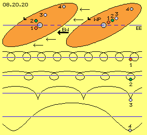
Bei den Überlegungen zum Verhalten der Monde darf man nicht nur die Drehung um ihren Planeten betrachten, sondern ihren Weg durch das Sonnensystem. In Bild 08.20.20 ist oben rechts schematisch ein Whirlpool (WP, hellrot) gezeichnet. Die Fläche steht etwas diagonal zur Ebene der Ekliptik (EE, blaue Linie) wie die Achsen der meisten Planeten (grau) oder auch die Bahn-Neigung ihrer Monde. Eingezeichnet sind auch vier Monde (1 bis 4) an unterschiedlichen Radien.
Oben links ist dieser (fiktive) Whirlpool nochmals gezeichnet, wobei die Monde sich links-drehend bewegt haben (von 1 bis 4 mit abnehmender Geschwindigkeit). Zur gleichen Zeit wurde der gesamte Whirlpool (inklusiv des Planeten und seiner Monde) durch den Ekliptik-Wind (EW, siehe Pfeil) nach links geschoben.
In der zweiten Zeile ist schematisch skizziert, dass ein schnell drehender Mond (1, rot) durch die überlagerte Bewegung einen ´girlanden-förmigen´ Weg durch den Raum geht. Diese Girlande wird weiter gestreckt bei einem langsamer drehenden Mond (2, grün). Wenn die Umdrehung und die Vorwärts-Bewegung gleich schnell erfolgen, ´hüpft´ der Mond (3, weiß) im Raum vorwärts. Diesen seltsamen Weg gehen bei Jupiter schon der äußere galileische Mond Callisto und bei Saturn schon die äußeren Teile des Rings. Die nochmals langsameren Satelliten, egal ob prograd oder retrograd, führen praktisch keine Umdrehung um ihren Planeten aus, sondern ´schlingern´ auf spiraliger Bahn vorwärts (siehe hier Mond 4, grau).
Wechselnde Schub-Richtung
In Bild 08.20.21 sind Bewegungen um die Sonne (S, weiß) dargestellt, z.B. die Bahn der Erde (E, grau) am Radius von etwa 150 Millionen Kilometer. Eingezeichnet ist ein (beliebiger) Whirlpool (WP, dunkelrot) in vier Positionen. Eine Neigung von etwa 23 bis 27 Grad ist durch eine weiße Diagonale markiert.
Der Whirlpool wird durch den Ekliptik-Wind (EW, siehe Pfeile) um die Sonne geschoben. Je nach ´Jahreszeit´ trifft der Schub auf die Diagonale (und damit die Monde) von unten oder von oben (im ´Sommer / Winter´) oder von einer Seite her (im ´Frühjahr / Herbst´). Alle Objekte in diesem Whirlpool driften darum nicht nur um den Planeten und auch nicht auf einer gleichförmigen Bahn (obiger Girlanden). Vielmehr sind alle reale Bahnen mehr oder weniger deformiert - gegenüber den vermeintlich exakten Kurven, die sich aus den abstrakten Formeln der Himmelsmechanik nach Newton/Kepler ergäben.
Sechseckige Bahn
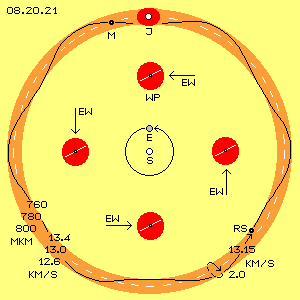
In Bild 08.20.21 ist oben Jupiter (J, weiß) eingezeichnet und um ihn herum der Bewegungsraum (dunkelrot) seiner Monde bzw. natürlichen Satelliten. Eingezeichnet ist auch ein Mond (M, schwarz), welcher Saturn im Abstand von 20 Millionen Kilometer (Mkm) umkreist. Der hellrote Ring kennzeichnet den Weg des Jupiters und seiner Trabanten um die Sonne - maßstabgerecht gezeichnet zur Bahn der Erde. Jupiter dreht im Durchschnitt an einem Radius von etwa 780 Mkm mit etwa 13.0 km/s um die Sonne. Etwa 12 Jahre braucht er für eine Umrundung (gestrichelter weißer Kreis).
Dieser Mond M fliegt auf einer spiraligen Bahn, einerseits nur 760 Mkm und andererseits bis zu 800 Mkm von der Sonne entfernt. Da der Ekliptik-Wind innen stärker ist als außen, wird der Mond einerseits mit 13.4 oder auch nur mit 12.6 km/s vorwärts geschoben. Eine ´Umrundung´ des Planeten dauert etwa zwei Jahre und erfolgt theoretisch mit etwa 2 km/s. Tatsächlich fliegt dieser retrograde Satellit (RS, schwarz) also auf einer ´sechs-eckigen´ Bahn (siehe schwarze Kurve) um die Sonne, immer vorwärts im Drehsinn der Ekliptik.
Dieser Mond fliegt nicht um den Jupiter auf einer ´regulären´ Bahn, sondern benimmt sich tatsächlich außerhalb aller (vermeintlich korrekter) Regeln gängiger Lehre. Der Whirlpool des Jupiters (und ebenso des Saturn) hat eine Schubwirkung nur bis maximal 15 Mkm Höhe. Dieser Mond bewegt sich also außerhalb des Whirlpools seines Planeten. Seine spiral-eckige Bahn um die Sonne ist nur ein bis zwei Prozent länger als die ´Luftlinie´. Um mithalten zu können mit seinem 13.0 km/s schnellen Planeten, muss er insgesamt nur 150 m/s schneller fliegen (also im Durchschnitt 13.15 km/s).
Beschleunigung und Umlenkung
Diese äußeren Satelliten driften im ´Äther-Wind der Ekliptik´. Wenn sie einwärts (zur Sonne hin) fliegen, werden sie beschleunigt bis auf 13.4 km/s. Danach schweben sie tangential auswärts und treffen dort auf Schichten mit einem schwächeren Vorwärts-Schlagen von z.B. nur 12.6 km/s. Diese Satelliten benehmen sich dabei wie ´Top-Spin´-Bälle beim Tennis: sie springen hoch ab vom Boden ohne Geschwindigkeit zu verlieren. Analog zu dem bekannten physikalischen Effekt werden diese Brocken von einigen Kilometer Durchmesser an den ´zu langsamen´ Ätherschichten nach innen (Richtung Sonne) zurück geworfen.
Die exakte Beschreibung dieses Prozesses ist in vorigen Kapiteln gegeben bzw. wurde oben bei Bild 08.20.07 bei G und H nochmals kurz dargestellt. Bei Beschleunigung durch schnell-schlagende Schichten wird der Wirbelkomplex eines Atoms hinten-innen eingedrückt und die Aura entspannt sich tangential-vorwärts. Wenn das Atom auf langsamere Schichten trifft, wird der Wirbelkomplex vorn-außen eingedrückt, er ´stolpert über den Bremsklotz´ und entspannt sich vorwärts-einwärts. Ein Atom ist zwar kein ´Festkörper´, aber dieser Wirbelkomplex aus Äther im Äther benimmt sich letztlich genau so wie voriger Tennisball in entsprechender Situation, jedes Atom und alle Atome dieser ´irregulären´ Satelliten insgesamt.
Überhol-Vorgänge
Die retrograden Satelliten drehen nicht wirklich gegenläufig zu ihren Planeten. Vielmehr überholen diese Monde ihren Planeten an der Sonnenseite. Gegenüber ihrem mit konstanter Geschwindigkeit fliegenden Planeten fallen die Satelliten etwas zurück, wenn sie in die äußeren langsamen Schichten kommen. Sie werden dann erst ´hinter´ dem Planeten wieder einwärts geschoben. Weil die Whirlpool-Ebene der Planeten diagonal zur Ekliptik-Ebene stehen, zeigt der Blick von oben eine Rechts-Drehung, also eine retrograde Bewegung, im Gegensatz zum generellen Links-Drehen aller anderen Objekte.
Oben bei Bild 08.20.19 wurde ausgeführt, dass in äußeren Zonen eines Whirlpools eventuell ein gegensinniges Schlagen existieren könnte. Bei den intensiven Wirbeln der Gas-Planeten wird es unvermeidlich auch zu turbulenten Bewegungen im Randbereich der Whirlpools kommen. Die nach außen driftenden Satelliten werden darum nicht exakt spiegelbildlich nach innen zurück geworfen. Je nach lokaler Schlag-Komponente werden sie früher oder später, mit spitzem oder flachem Winkel wieder einwärts gespült.
Kommen und Gehen
Es können verschiedene Gruppen von Satelliten unterschieden werden aufgrund ihrer materiellen Strukturen, der Inklination ihrer Bahnen oder ihrer Umlaufzeiten. Häufig sind es Bruchstücke aus der Kollision größerer Objekte oder es wurden externe Objekte im Whirlpool ´eingefangen´. Aus den vielfältigen Einflüssen resultieren letztlich die wirren Bahnen, wie sie in obigem Bild 08.20.18 dargestellt sind (dennoch weisen die meisten Satelliten des Jupiters und des Saturns nur geringe Neigung zur Ekliptik auf).
Gelegentlich werden die Satelliten nicht exakt zurück gespült, so dass sich die Bahnen ´alter´ Satelliten im Laufe der Zeit ausweiten. Mehrere beobachtete Brocken waren später nicht mehr zu sehen und es ist durchaus wahrscheinlich, dass gelegentlich ein Satellit aus diesem Bewegungsknäuel ausbricht und einfach davon fliegt.
Phänomen und Phantom
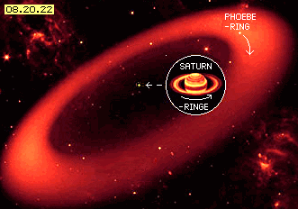
Aufgrund besserer Ausstattung wurden gerade in den letzten Jahren viele neue Objekte entdeckt. Sobald einige Daten vorliegen wird versucht, den Bahnverlauf zu ermitteln und Rückschlüsse auf Masse, Dichte, Volumen usw. zu ziehen. Es ist erstaunlich, dass hier sogar von ´irregulären Satelliten´ geredet wird. Normalerweise wird dem breiten Publikum (oder sich selbst) suggeriert, es würde alles perfekt mit den Gesetzen der Himmelsmechanik überein stimmen. Realiter folgt keine einzige Bahn exakt den theoretischen Vorgaben nach Newton / Kepler (siehe z.B. ´Geostationäre Satelliten´ des vorigen Kapitels).
Seit Anbeginn glaubte man, die Himmelskörper müssten sich nach einem heiligen Plan in vollkommener Harmonie zu himmlischen Sphärenklängen bewegen. Kein Stern, kein Planet und kein Mond muss aber perfekte geometrische Formen an den Himmel malen, muss nicht die Kreiszahl beweisen oder den Goldenen Schnitt abbilden. Es wäre zweckdienlicher gewesen, die Objekte am Himmel in einer Strömung treibend zu sehen, inklusiv ständig neuer Unregelmäßigkeiten.
Es tauchen immer neue Phänomene auf, z.B. wurde in 2009 ein Ring aus Eis- und Staubpartikeln registriert, welcher synchron zum Satelliten Phoebe retrograd um den Saturn driftet. Hierbei hat sich nicht die Staubwolke zu einem Mond verdichtet. Vielmehr wird umgekehrt vermutet, dass der Staub aus dem festen Himmelskörper heraus geschlagen wird (wie z.B. auch Io per Vulkanismus einen Staubring erzeugt). In der Bild-Montage 08.20.22 sind die gewaltigen Relationen zu erkennen: in diesem Ring von 24 Millionen Kilometer Durchmesser verschwindet Saturn inklusiv seiner Ringe zu einem winzigen Punkt.
Unsichtbare Realität
Wenn dieser Phoebe-Ring genügend Sonnenlicht reflektieren würde, wäre er das größte Objekt im Sonnensystem. Damit teilt dieses ´Phantom´ das Schicksal der unsichtbaren, vielfach größeren Objekte: der Äther-Whirlpools der Planeten und des Sonnensystems insgesamt.
In der Astronomie kann heute sehr viel mehr und sehr viel präziser erkannt werden als früher technisch möglich war. Solange aber die Bewertung der Erscheinungen auf Basis des Phantoms ´leerer Raum´ und des Phänomens einer vermeintlichen ´Masse-Anziehung´ getroffen werden - wird es keinen wesentlichen Erkenntnis-Zuwachs geben können.
Mit diesem Kapitel wollte ich - just for fun - die ´unmöglichen´ Bewegungen auf der Jupiter-Oberfläche erklären. Die retrograden Monde erzwangen einen Umweg über den Saturn, seine Ringe und Monde. All diese Erscheinungen sind mit gängiger Astro-Physik nicht zu erklären - aber absolut verständlich auf Basis eines lückenlosen Äthers - auch wenn dieser unsichtbar bleibt.
Evert / 12-12-2010